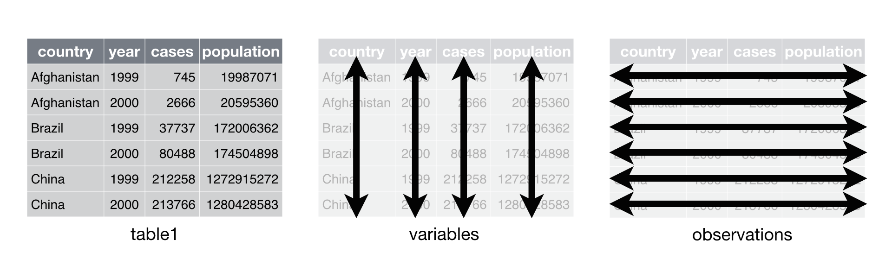
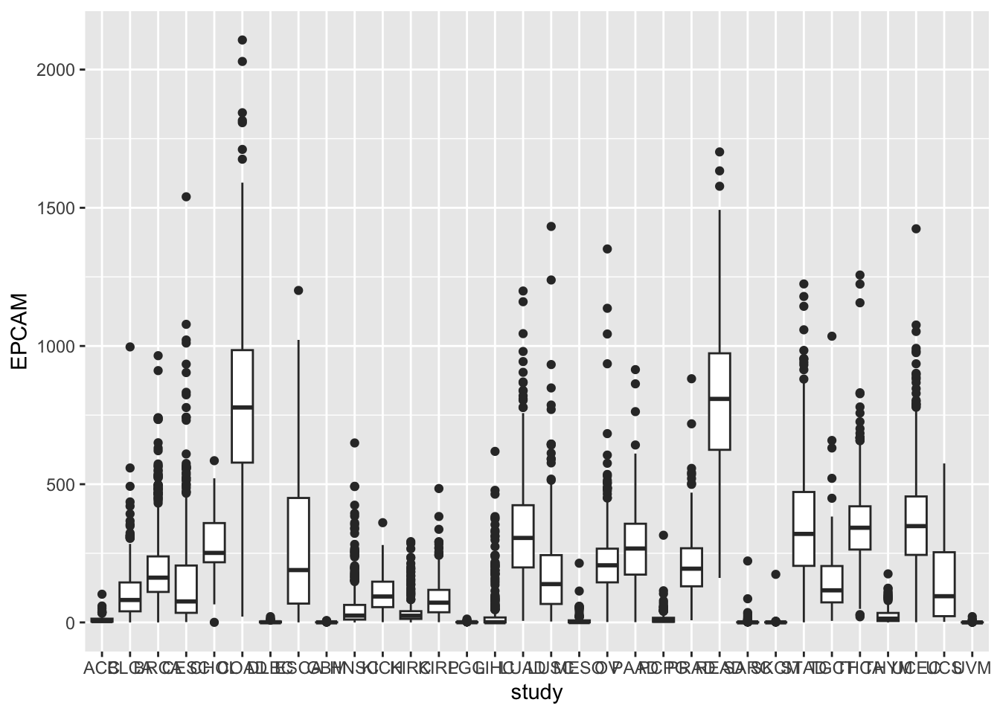
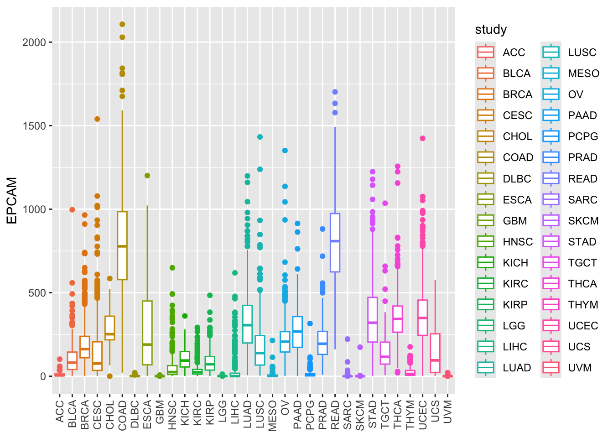

Chapter 9 Introduction to the tidyverse ecosystem
9.1 What is the Tidyverse?
In this lesson, we will explore the Tidyverse, a powerful collection of R packages designed to simplify and streamline the data science workflow. The Tidyverse is particularly well-suited for beginners and professionals alike, as it encourages a structured and intuitive approach to data manipulation and visualization.

The Tidyverse is a comprehensive ecosystem of R packages that share common principles for data manipulation and visualization. It encourages the use of tidy data, a specific data structure that makes data analysis more straightforward. Tidy data arranges observations in rows and variables in columns, making it easier to work with and visualize.
9.2 Key Tidyverse Packages
Let’s dive into some of the essential packages within the Tidyverse and understand how they can be beneficial in data analysis.
9.2.1 dplyr
Explore dplyr docs here.
The core of the Tidyverse is the dplyr package. It provides a set of functions for data manipulation, including filtering, summarizing, and transforming data frames. Here’s a simple example of how you might use dplyr to filter data:
# install.packages("dplyr")
# Load the dplyr package
library(dplyr)
# Create a data frame
data <- data.frame(
Name = c("Alice", "Bob", "Charlie"),
Age = c(25, 30, 22)
)
data ## Name Age
## 1 Alice 25
## 2 Bob 30
## 3 Charlie 22# Filter the data to select individuals older than 25
filtered_data <- data %>%
filter(Age > 25)
# View the filtered data
filtered_data## Name Age
## 1 Bob 30In this example, we used filter() to select rows where the “Age” column is greater than 25.
9.2.2 A note on the pipe
You just saw the %>% operator. It is also called a pipe.
%>% is from the magrittr package and when you load the dplyr package, the %>% will be available for you to use.
The R language has a new, built-in pipe operator as of R version 4.1: |>.
## mpg cyl disp hp drat wt qsec vs am gear carb
## Mazda RX4 21.0 6 160 110 3.90 2.620 16.46 0 1 4 4
## Mazda RX4 Wag 21.0 6 160 110 3.90 2.875 17.02 0 1 4 4
## Datsun 710 22.8 4 108 93 3.85 2.320 18.61 1 1 4 1
## Hornet 4 Drive 21.4 6 258 110 3.08 3.215 19.44 1 0 3 1
## Hornet Sportabout 18.7 8 360 175 3.15 3.440 17.02 0 0 3 2
## Valiant 18.1 6 225 105 2.76 3.460 20.22 1 0 3 1## mpg cyl disp hp drat wt qsec vs am gear carb
## Mazda RX4 21.0 6 160 110 3.90 2.620 16.46 0 1 4 4
## Mazda RX4 Wag 21.0 6 160 110 3.90 2.875 17.02 0 1 4 4
## Datsun 710 22.8 4 108 93 3.85 2.320 18.61 1 1 4 1
## Hornet 4 Drive 21.4 6 258 110 3.08 3.215 19.44 1 0 3 1
## Hornet Sportabout 18.7 8 360 175 3.15 3.440 17.02 0 0 3 2
## Valiant 18.1 6 225 105 2.76 3.460 20.22 1 0 3 1Think of %>% and |> in R the same as | in the unix commands: the output of the previous command is the input of the next command.
The pipe operator %>% is a very useful tool for writing efficient, easy-to-read code in R. You can use as many pipes as you want. I usually build the pipes one by one by looking at the output.
## mpg cyl disp hp drat wt qsec vs am gear carb
## Hornet 4 Drive 21.4 6 258 110 3.08 3.215 19.44 1 0 3 1
## Hornet Sportabout 18.7 8 360 175 3.15 3.440 17.02 0 0 3 2
## Valiant 18.1 6 225 105 2.76 3.460 20.22 1 0 3 1This means print out the first 6 rows and then take the last 3 rows.
9.2.3 ggplot2
Explore ggplot2 docs here.
The ggplot2 package is the go-to choice for data visualization in the Tidyverse. It follows the “grammar of graphics” approach, allowing you to build complex plots layer by layer. Here’s a basic example:
# install.packages("ggplot2")
# Load the ggplot2 package
library(ggplot2)
# Create a scatter plot
ggplot(data, aes(x = Age, y = Name)) +
geom_point()n this code, we used ggplot() to set up the plot and geom_point() to add scatterplot points to the canvas.
9.2.4 tidyr
Explore tidyr docs here.
The tidyr package assists in reshaping data between wide and long formats, which is often necessary for analysis and visualization. Suppose you have a dataset with columns representing different years and want to convert it to a long format for easier analysis. tidyr can help with this transformation.

9.2.5 readr
Explore readr docs here.
readr is a fast and efficient package for reading tabular data into R. It’s faster than the base R functions like read.csv(). When working with large datasets, this can significantly speed up your data loading process.
Tabular data are rectangular:

9.2.6 tibble
Explore tibble docs here.
the rectangular data will be read into R as a dataframe. tibble provides an improved data frame structure that addresses some issues with traditional R data frames. It displays data more neatly and provides better compatibility with the Tidyverse functions.
9.2.7 stringr
Explore stringr docs here.
The stringr package offers a range of string manipulation functions that are easier to use and more consistent than the base R functions. It’s particularly handy when dealing with text data, such as cleaning and formatting strings.
9.2.8 forcats
Explore forcats docs here.
forcats is designed for handling factor variables, which are categorical variables with predefined levels. It provides tools for changing the order of levels and combining levels when necessary.
9.2.9 Real-World Applications
To illustrate the practical utility of the Tidyverse, consider the following scenarios:
Data Import:
readrhelps you efficiently import data from various sources, such as CSV files, Excel spreadsheets, or even web-based data.Data Cleaning: When working with messy data,
tidyrandstringrcan assist in reshaping and cleaning data for analysis.Data Exploration: When you receive a dataset, you can use
dplyrto quickly filter, summarize, and explore the data, helping you understand its characteristics.Data Visualization:
ggplot2allows you to create stunning visualizations, making it easier to convey insights to others. For instance, you can create bar charts, scatter plots, and histograms.Working with Factors:
forcatssimplifies tasks like reordering factor levels for better visual representation.
By mastering the Tidyverse, you’ll have a powerful set of tools at your disposal for all stages of data analysis, from data preprocessing to visualization and modeling. Happy coding!
9.3 Tibble and Readr - Modern Data Structures in R
In this lesson, we will explore two essential concepts in data manipulation with R: tibbles and the readr package. These tools are designed to make working with data more efficient and user-friendly, especially when dealing with large datasets. We’ll see why tibbles are preferred over traditional data frames and how to read and manipulate data using the readr package.
9.3.1 Tibbles: A Better Way to Store Data
Traditional Data Frames vs. Tibbles:

In R, data frames are widely used for storing and manipulating data. However, tibbles offer several advantages over traditional data frames:
Cleaner Printing: Tibbles offer a more organized way to present your data. When you print a tibble, it only displays the first 10 rows and as many columns as can fit on your screen. This ensures a concise overview of your data, which is particularly helpful for large datasets. In contrast, traditional data frames tend to print all rows and columns by default, leading to overwhelming output.
Structured Indexing: When you subset a tibble using [ ], it returns another tibble that retains the original data’s structure. This means you still have clear column names and data types. In contrast, data frames return vectors, which provide less information about the structure of the data subset. You need to specify drop = FALSE to retain as a data frame and we see examples in previous lectures.
Preservation of Variable Types: Tibbles respect the original data types of your variables, even after subsetting. This is important because it ensures that your data remains consistent. In some cases, data frames may convert variables to factors or matrices when you subset them, potentially causing unexpected issues.
String Handling: In tibbles, character vectors remain as characters, maintaining the integrity of your data. However, data frames may automatically convert character vectors to factors by default. This behavior can lead to unexpected changes in your data and, subsequently, your analysis.
List-Columns: One unique feature of tibbles is their ability to directly contain list-columns. List-columns allow you to store lists within your tibble, providing a convenient way to work with complex data structures. Data frames do not offer this feature, which can limit your ability to represent certain types of data effectively.
Enhanced Output: Tibbles enhance the print display by showing data types, highlighting missing values, and truncating output for better readability. This additional information helps you understand your data at a glance, making it easier to spot potential issues or trends.
9.3.2 Rownames and Tibbles
In regular data frames, you can assign and work with rownames, which are helpful for labeling and referencing rows. However, tibbles do not support rownames, so you want to add another column that contains the row ids.
9.3.3 Reading Data with readr
To work with data effectively, you first need to import it into R. The readr package provides a powerful toolset for reading various data file formats. Let’s see how to read data using readr.
9.3.3.1 Reading CSV Data
Download the TCGA gene expression data (CSV file) to your working directory or specify the correct file path.
Download the file at https://osf.io/yeun5
Click the Download:

Suppose we have a CSV file named “TCGA_cancer_genes_expression.csv” in the Downloads folder, to read it using readr::read_csv, follow these steps:
# Load the readr package (if not already loaded)
library(readr)
# Read the CSV data into a tibble
tcga_data <- readr::read_csv("~/Downloads/TCGA_cancer_genes_expression.csv")
# Display the first few rows of the tibble
head(tcga_data)## # A tibble: 6 × 25
## ...1 TACSTD2 VTCN1 MUC1 NECTIN4 FOLH1 FOLR1 CD276 MSLN CLDN6 ERBB2
## <chr> <dbl> <dbl> <dbl> <dbl> <dbl> <dbl> <dbl> <dbl> <dbl> <dbl>
## 1 43e715bf… 0.704 0 0.675 0.0862 7.21 0 52.8 0.0667 0.0970 1.88
## 2 1a5db9fc… 25.4 0 2.02 0.0728 23.6 0.122 78.8 0.956 0.255 7.78
## 3 93b382e4… 1.58 0 0.908 0.699 2.85 1.01 146. 0.0456 0.257 2.91
## 4 1f39dadd… 0.270 0.0910 0.0429 0.0165 1.16 0.279 48.5 0.0315 0.247 4.91
## 5 8c8c09b9… 0.412 0 0.115 0.0317 2.41 0.0492 42.3 0.270 0.126 1.49
## 6 85a86b91… 4.55 4.86 0.0421 0.0683 1.01 0.0225 20.6 0.0134 0.0182 13.5
## # ℹ 14 more variables: MUC16 <dbl>, DLL3 <dbl>, CEACAM5 <dbl>, PVR <dbl>,
## # EPCAM <dbl>, PROM1 <dbl>, CD24 <dbl>, EGFR <dbl>, MET <dbl>,
## # TNFRSF10B <dbl>, tcga.tcga_barcode <chr>,
## # tcga.cgc_sample_sample_type <chr>, study <chr>, sample_type <chr>Here, we load the readr package, use read_csv to read the CSV file, and store the data in the tcga_data tibble. Finally, we use head to display the first few rows of the tibble.
note that the first column’s name changes to “…1,” which is a default behavior when column names are missing in the source data.
9.3.3.2 Understanding the Output
The output shows the data in a neat tabular format. Column names are displayed at the top, followed by rows of data. Each column’s data type is indicated (e.g., dbl for double-precision floating point numbers or chr for character).
9.3.4 Using Tibbles with Imported Data
When working with tibbles, imported data maintains its format and advantages over data frames. Here’s how you can convert the imported data into a tibble:
# Load the dplyr package for tibble conversion
library(dplyr)
# read in the data using built-in read.csv
tcga_data<- read.csv("~/Downloads/TCGA_cancer_genes_expression.csv")
# regular dataframe, and the first column name is X if it is empty
head(tcga_data)## X TACSTD2 VTCN1 MUC1
## 1 43e715bf-28d9-4b5e-b762-8cd1b69a430e 0.7035937 0.00000000 0.67502205
## 2 1a5db9fc-2abd-4e1b-b5ef-b1cf5e5f3872 25.4360736 0.00000000 2.01525394
## 3 93b382e4-9c9a-43f5-bd3b-502cc260b886 1.5756197 0.00000000 0.90784666
## 4 1f39dadd-3655-474e-ba4c-a5bd32c97a8b 0.2702156 0.09099681 0.04293345
## 5 8c8c09b9-ec83-45ec-bc4c-0ba92de60acb 0.4122814 0.00000000 0.11484380
## 6 85a86b91-4f24-4e77-ae2d-520f8e205efc 4.5469193 4.85973690 0.04208195
## NECTIN4 FOLH1 FOLR1 CD276 MSLN CLDN6 ERBB2
## 1 0.08620727 7.213342 0.00000000 52.75981 0.06674445 0.09704962 1.879518
## 2 0.07279804 23.552286 0.12154673 78.78551 0.95554610 0.25458796 7.777976
## 3 0.69905270 2.853812 1.01000271 145.84399 0.04563568 0.25701910 2.905926
## 4 0.01652257 1.157070 0.27942068 48.45022 0.03154912 0.24746913 4.914280
## 5 0.03168398 2.408137 0.04922458 42.25592 0.26968788 0.12576720 1.494744
## 6 0.06828305 1.010411 0.02248965 20.63795 0.01336404 0.01823883 13.474689
## MUC16 DLL3 CEACAM5 PVR EPCAM PROM1 CD24
## 1 0.0011479879 0.49589978 0 52.08113 4.521984 0.025311008 0.55036003
## 2 0.0008049670 2.52244014 0 40.87926 9.530414 0.023576862 9.67272890
## 3 0.0026190288 0.77074712 0 33.26727 42.358567 0.000000000 0.06939934
## 4 0.0051705741 0.10636402 0 28.26457 16.316524 0.007783431 0.84522244
## 5 0.0004894306 0.04483123 0 41.66776 12.529742 0.019204339 0.21369023
## 6 0.0000000000 0.01184285 0 30.18711 2.430109 0.043719865 4.95506593
## EGFR MET TNFRSF10B tcga.tcga_barcode
## 1 1.286481 0.9320235 12.80547 TCGA-OR-A5KU-01A-11R-A29S-07
## 2 5.373307 8.0610999 31.46289 TCGA-P6-A5OG-01A-22R-A29S-07
## 3 4.600918 0.1295387 65.57967 TCGA-OR-A5K5-01A-11R-A29S-07
## 4 3.010374 2.9728030 24.31636 TCGA-OR-A5K4-01A-11R-A29S-07
## 5 16.476552 19.7360055 21.11014 TCGA-OR-A5LP-01A-11R-A29S-07
## 6 2.010338 8.6087283 37.91574 TCGA-PK-A5H9-01A-11R-A29S-07
## tcga.cgc_sample_sample_type study sample_type
## 1 Primary Tumor ACC cancer
## 2 Primary Tumor ACC cancer
## 3 Primary Tumor ACC cancer
## 4 Primary Tumor ACC cancer
## 5 Primary Tumor ACC cancer
## 6 Primary Tumor ACC cancer# Convert the data to a tibble
tcga_data <- tcga_data %>%
tibble::as_tibble()
# Display the first few rows of the tibble
head(tcga_data)## # A tibble: 6 × 25
## X TACSTD2 VTCN1 MUC1 NECTIN4 FOLH1 FOLR1 CD276 MSLN CLDN6 ERBB2
## <chr> <dbl> <dbl> <dbl> <dbl> <dbl> <dbl> <dbl> <dbl> <dbl> <dbl>
## 1 43e715bf… 0.704 0 0.675 0.0862 7.21 0 52.8 0.0667 0.0970 1.88
## 2 1a5db9fc… 25.4 0 2.02 0.0728 23.6 0.122 78.8 0.956 0.255 7.78
## 3 93b382e4… 1.58 0 0.908 0.699 2.85 1.01 146. 0.0456 0.257 2.91
## 4 1f39dadd… 0.270 0.0910 0.0429 0.0165 1.16 0.279 48.5 0.0315 0.247 4.91
## 5 8c8c09b9… 0.412 0 0.115 0.0317 2.41 0.0492 42.3 0.270 0.126 1.49
## 6 85a86b91… 4.55 4.86 0.0421 0.0683 1.01 0.0225 20.6 0.0134 0.0182 13.5
## # ℹ 14 more variables: MUC16 <dbl>, DLL3 <dbl>, CEACAM5 <dbl>, PVR <dbl>,
## # EPCAM <dbl>, PROM1 <dbl>, CD24 <dbl>, EGFR <dbl>, MET <dbl>,
## # TNFRSF10B <dbl>, tcga.tcga_barcode <chr>,
## # tcga.cgc_sample_sample_type <chr>, study <chr>, sample_type <chr>By using the %>% pipe operator and tibble::as_tibble(), we convert the data into a tibble while preserving its structure and advantages.
The output remains in a similar format as before, with clear column names and data types.
9.3.5 Note on reading Excel files
We still deal with a lot of spreadsheets, to read in Excel files, take a look at the readxl package.
9.3.6 Conclusion
In this lesson, we learned about tibbles, a modern data structure in R that offers several advantages over traditional data frames. We also explored how to read and manipulate data using the readr package, converting imported data into tibbles for efficient data analysis. Tibbles and readr are valuable tools for data scientists and analysts working with R, making data manipulation and exploration more user-friendly and efficient.
9.4 The tidy data format
In this lesson, we will delve into the essential data cleaning and tidying operations in R using the powerful dplyr package. Tidying data is a crucial step in data analysis, especially when dealing with real-world data that can be messy and inconsistent. We will explore the concept of tidy data and learn about the distinction between long and wide dataset formats.
9.4.1 The Importance of Tidy Data
Real-world data is often messy, scattered across various files, missing metadata, and inputted in inconsistent formats. Before we can effectively analyze this data, we need to bring it all together into one structured table and resolve any issues. This process of data ingestion and standardization is known as data tidying.

The tidyverse packages, including dplyr, work seamlessly with tidy data. As defined by Hadley Wickham in R for Data Science, tidy data adheres to three interrelated rules:
Each variable must have its own column.
Each observation must have its own row.
Each value must have its own cell.
Why should we make our data tidy? There are both general and specific advantages:
General Advantage: Using a consistent data structure makes it easier to learn and work with data manipulation tools because they follow a uniform pattern.
Specific Advantage: Placing variables in columns allows R’s vectorized nature to shine. Most built-in R functions work efficiently with vectors of values. This natural alignment between tidy data and R’s capabilities makes data transformation feel particularly intuitive.
9.4.2 Long Format vs. Wide Format
Before we dive into the practical aspects of tidying data, let’s understand the difference between long format and wide format for a dataframe. We’ll use an example with the dplyr package:
## # A tibble: 3 × 3
## country `1999` `2000`
## <chr> <dbl> <dbl>
## 1 Afghanistan 745 2666
## 2 Brazil 37737 80488
## 3 China 212258 213766The table4a dataframe is in the wide format, which is a common way to enter data into software like Excel. In this format, each column often represents a year, and the values are spread across columns for each country.
To convert this data into the long format, we’ll use tidyr::pivot_longer(). This function reshapes the data, making it easier to work with:
## # A tibble: 6 × 3
## country year cases
## <chr> <chr> <dbl>
## 1 Afghanistan 1999 745
## 2 Afghanistan 2000 2666
## 3 Brazil 1999 37737
## 4 Brazil 2000 80488
## 5 China 1999 212258
## 6 China 2000 213766Now, the data fulfills the three rules for tidy data:
Each variable (country and year) has its own column.
Each observation (combinations of country and year) has its own row.
Each value (the number of cases) has its own cell.
Understanding the difference between long and wide formats is essential because it determines how we structure our data for analysis. Once you grasp these concepts, reshaping and tidying data becomes a more comfortable and intuitive process.
Take your time to study and understand these data formats. It will significantly boost your confidence in reshaping and tidying data for your analytical tasks.
9.5 Introducing dplyr: Your Data Wrangling Toolkit
In this lesson, we’ll delve into the world of the dplyr package in R, which offers a powerful and concise set of tools for working with data frames. As a biology student new to programming, dplyr will be your trusty companion for effortlessly managing, filtering, and summarizing biological data.
To master dplyr, it’s crucial to grasp its five core functions: mutate(), select(), filter(), summarise(), and arrange(). Each function serves a specific purpose in data manipulation.
9.5.1 Selecting Specific Columns
We will be working with the same tibble called tcga_data that has numerous columns, but you’re interested in extracting the “EPCAM” column along with other metadata columns. EPCAM, short for epithelial cellular adhesion molecule, is highly relevant in the context of epithelial cancer cells.
## # A tibble: 11,348 × 5
## EPCAM tcga.tcga_barcode tcga.cgc_sample_sample…¹ study sample_type
## <dbl> <chr> <chr> <chr> <chr>
## 1 4.52 TCGA-OR-A5KU-01A-11R-A29S-07 Primary Tumor ACC cancer
## 2 9.53 TCGA-P6-A5OG-01A-22R-A29S-07 Primary Tumor ACC cancer
## 3 42.4 TCGA-OR-A5K5-01A-11R-A29S-07 Primary Tumor ACC cancer
## 4 16.3 TCGA-OR-A5K4-01A-11R-A29S-07 Primary Tumor ACC cancer
## 5 12.5 TCGA-OR-A5LP-01A-11R-A29S-07 Primary Tumor ACC cancer
## 6 2.43 TCGA-PK-A5H9-01A-11R-A29S-07 Primary Tumor ACC cancer
## 7 3.74 TCGA-OR-A5LD-01A-11R-A29S-07 Primary Tumor ACC cancer
## 8 4.08 TCGA-OR-A5JX-01A-11R-A29S-07 Primary Tumor ACC cancer
## 9 2.84 TCGA-PK-A5H8-01A-11R-A29S-07 Primary Tumor ACC cancer
## 10 3.61 TCGA-OR-A5J3-01A-11R-A29S-07 Primary Tumor ACC cancer
## # ℹ 11,338 more rows
## # ℹ abbreviated name: ¹tcga.cgc_sample_sample_typeThis code utilizes the select() function to pick specific columns by their names, creating a tidy subset of your data. We used : to select a range of columns. Note that the columns are reordered
putting EPCAM to the first column.
You can also use index to select the columns
## [1] "X" "TACSTD2"
## [3] "VTCN1" "MUC1"
## [5] "NECTIN4" "FOLH1"
## [7] "FOLR1" "CD276"
## [9] "MSLN" "CLDN6"
## [11] "ERBB2" "MUC16"
## [13] "DLL3" "CEACAM5"
## [15] "PVR" "EPCAM"
## [17] "PROM1" "CD24"
## [19] "EGFR" "MET"
## [21] "TNFRSF10B" "tcga.tcga_barcode"
## [23] "tcga.cgc_sample_sample_type" "study"
## [25] "sample_type"The EPCAM column is the 16th column; tcga.tcga_barcode is the 23rd column;
sample_type is 25th column:
## # A tibble: 11,348 × 4
## EPCAM tcga.cgc_sample_sample_type study sample_type
## <dbl> <chr> <chr> <chr>
## 1 4.52 Primary Tumor ACC cancer
## 2 9.53 Primary Tumor ACC cancer
## 3 42.4 Primary Tumor ACC cancer
## 4 16.3 Primary Tumor ACC cancer
## 5 12.5 Primary Tumor ACC cancer
## 6 2.43 Primary Tumor ACC cancer
## 7 3.74 Primary Tumor ACC cancer
## 8 4.08 Primary Tumor ACC cancer
## 9 2.84 Primary Tumor ACC cancer
## 10 3.61 Primary Tumor ACC cancer
## # ℹ 11,338 more rowsWe can even mix the index with column names:
## # A tibble: 11,348 × 4
## EPCAM tcga.cgc_sample_sample_type study sample_type
## <dbl> <chr> <chr> <chr>
## 1 4.52 Primary Tumor ACC cancer
## 2 9.53 Primary Tumor ACC cancer
## 3 42.4 Primary Tumor ACC cancer
## 4 16.3 Primary Tumor ACC cancer
## 5 12.5 Primary Tumor ACC cancer
## 6 2.43 Primary Tumor ACC cancer
## 7 3.74 Primary Tumor ACC cancer
## 8 4.08 Primary Tumor ACC cancer
## 9 2.84 Primary Tumor ACC cancer
## 10 3.61 Primary Tumor ACC cancer
## # ℹ 11,338 more rows9.5.2 Adding New Columns
The mutate() function allows you to introduce new variables that are derived from existing ones. For instance, you can create a new column, “log2EPCAM,” containing the logarithm base-2 of the EPCAM values:
## # A tibble: 11,348 × 5
## EPCAM tcga.cgc_sample_sample_type study sample_type log2EPCAM
## <dbl> <chr> <chr> <chr> <dbl>
## 1 4.52 Primary Tumor ACC cancer 2.18
## 2 9.53 Primary Tumor ACC cancer 3.25
## 3 42.4 Primary Tumor ACC cancer 5.40
## 4 16.3 Primary Tumor ACC cancer 4.03
## 5 12.5 Primary Tumor ACC cancer 3.65
## 6 2.43 Primary Tumor ACC cancer 1.28
## 7 3.74 Primary Tumor ACC cancer 1.90
## 8 4.08 Primary Tumor ACC cancer 2.03
## 9 2.84 Primary Tumor ACC cancer 1.51
## 10 3.61 Primary Tumor ACC cancer 1.85
## # ℹ 11,338 more rows9.5.3 Reordering Columns
If you want to rearrange the order of columns, you can again use select(). Here, we move the “log2EPCAM” column to the front while keeping all other columns intact:
## # A tibble: 11,348 × 5
## EPCAM log2EPCAM tcga.cgc_sample_sample_type study sample_type
## <dbl> <dbl> <chr> <chr> <chr>
## 1 4.52 2.18 Primary Tumor ACC cancer
## 2 9.53 3.25 Primary Tumor ACC cancer
## 3 42.4 5.40 Primary Tumor ACC cancer
## 4 16.3 4.03 Primary Tumor ACC cancer
## 5 12.5 3.65 Primary Tumor ACC cancer
## 6 2.43 1.28 Primary Tumor ACC cancer
## 7 3.74 1.90 Primary Tumor ACC cancer
## 8 4.08 2.03 Primary Tumor ACC cancer
## 9 2.84 1.51 Primary Tumor ACC cancer
## 10 3.61 1.85 Primary Tumor ACC cancer
## # ℹ 11,338 more rowsThe everything() helper function denotes all other columns, ensuring your numeric columns are at the front.
9.5.4 Filtering Data
filter() is your go-to function for extracting observations that meet specific criteria. To isolate data only related to glioblastoma (GBM), you can apply the following filter:
## # A tibble: 175 × 5
## EPCAM tcga.cgc_sample_sample_type study sample_type log2EPCAM
## <dbl> <chr> <chr> <chr> <dbl>
## 1 0.329 Primary Tumor GBM cancer -1.60
## 2 0.152 Primary Tumor GBM cancer -2.72
## 3 0.0814 Primary Tumor GBM cancer -3.62
## 4 0.367 Recurrent Tumor GBM cancer -1.45
## 5 0.0614 Primary Tumor GBM cancer -4.02
## 6 0.350 Primary Tumor GBM cancer -1.51
## 7 0.165 Primary Tumor GBM cancer -2.60
## 8 0.0989 Primary Tumor GBM cancer -3.34
## 9 0.466 Primary Tumor GBM cancer -1.10
## 10 0.707 Recurrent Tumor GBM cancer -0.500
## # ℹ 165 more rowsThis code snippet retains only the rows corresponding to GBM in your dataset.
9.5.5 Summarizing Data
Suppose you want to calculate the average EPCAM expression for each cancer type in your dataset. You can utilize summarise() in conjunction with group_by():
## # A tibble: 33 × 2
## study average_EPCAM
## <chr> <dbl>
## 1 ACC 11.2
## 2 BLCA 102.
## 3 BRCA 177.
## 4 CESC 166.
## 5 CHOL 223.
## 6 COAD 792.
## 7 DLBC 2.61
## 8 ESCA 273.
## 9 GBM 0.623
## 10 HNSC 50.3
## # ℹ 23 more rowsHere, the data is grouped by the “study” variable, and the summarise() function calculates the mean EPCAM value for each group.
9.5.6 Sorting Data
To sort your data frame based on a specific column, employ arrange(). For instance, you can order your dataset by the median level of EPCAM:
tcga_data %>%
group_by(study) %>%
summarise(average_EPCAM = mean(EPCAM),
median_EPCAM = median(EPCAM)) %>%
arrange(median_EPCAM)## # A tibble: 33 × 3
## study average_EPCAM median_EPCAM
## <chr> <dbl> <dbl>
## 1 UVM 0.765 0.0583
## 2 SKCM 0.980 0.133
## 3 SARC 2.87 0.224
## 4 GBM 0.623 0.323
## 5 DLBC 2.61 0.578
## 6 LAML 3.14 0.595
## 7 LGG 0.906 0.681
## 8 MESO 11.3 1.14
## 9 LIHC 31.2 1.22
## 10 ACC 11.2 4.83
## # ℹ 23 more rowsThe default is arrange from the smallest to the biggest. Let’s reverse it by using the helper descending function desc:
tcga_data %>%
group_by(study) %>%
summarise(average_EPCAM = mean(EPCAM),
median_EPCAM = median(EPCAM)) %>%
arrange(desc(median_EPCAM))## # A tibble: 33 × 3
## study average_EPCAM median_EPCAM
## <chr> <dbl> <dbl>
## 1 READ 834. 808.
## 2 COAD 792. 787.
## 3 THCA 350. 345.
## 4 UCEC 351. 337.
## 5 STAD 335. 306.
## 6 LUAD 307. 289.
## 7 PAAD 278. 265.
## 8 CHOL 223. 236.
## 9 OV 228. 207.
## 10 PRAD 199. 182.
## # ℹ 23 more rowsWe see READ and COAD colon cancers have the highest EPCAM expression.
This code sorts the dataset from the smallest to the largest median EPCAM values.
9.5.7 Conclusion
In summary:
mutate() adds new columns.
filter() extracts specific observations.
select() picks/reorders columns.
summarise() reduces multiple values to summaries.
arrange() reorders rows.
These four fundamental functions empower you to efficiently manipulate, analyze, and summarize biological data frames, providing a more concise and readable approach compared to traditional R methods. As your programming skills grow, dplyr will remain an indispensable tool in your data science toolkit.
9.6 stringr: your essential toolkit to manipulate strings
xxxx
9.7 purrr: ditch your for loops
In this lesson, we’ll learn about the purrr package in R. Purrr provides a set of tools for working with lists and other recursive data structures in a functional programming style.
A recursive data structure in R refers to a data object that can contain other objects of the same type as its components. For example, a list in R can be recursive because it can contain other lists within it, creating a nested or hierarchical structure.
As a biology student, you’ll likely need to apply the same operation to multiple data sets or columns. That’s where purrr becomes really handy! The key functions we’ll cover are:
map()and its variantsmap_chr(),map_dbl()- Applies a function to each element of a list or vector. For example, you could calculate the mean of every column in a data frame:
In the previous section, we learned about loops. There is nothing wrong with for loops. However, with purrr::map(), I find myself writing less and less for loops.
9.7.1 Nesting Data with nest()
The nest() function in R, when used with tibbles, groups your data based on a specific variable and creates a new column containing nested data frames for each group. It’s like putting similar data into separate containers, making it easier to work with and analyze them as a whole or individually.
Imagine you have a large table of information about different types of cancer samples. You want to organize this data in a way that groups all the information related to each type of cancer separately. One way to do this is by using the tidyr::nest() function along with the purrr package in R.
Here’s how you can achieve this:
# read in the data again
tcga_data <- readr::read_csv("~/Downloads/TCGA_cancer_genes_expression.csv")
# Group and nest the data
tcga_nest <- tcga_data %>%
filter(sample_type == "cancer") %>%
select(EPCAM, tcga.tcga_barcode:sample_type) %>%
group_by(study) %>%
tidyr::nest()
tcga_nest## # A tibble: 32 × 2
## # Groups: study [32]
## study data
## <chr> <list>
## 1 ACC <tibble [79 × 4]>
## 2 BLCA <tibble [414 × 4]>
## 3 BRCA <tibble [1,127 × 4]>
## 4 CESC <tibble [304 × 4]>
## 5 CHOL <tibble [36 × 4]>
## 6 COAD <tibble [504 × 4]>
## 7 DLBC <tibble [48 × 4]>
## 8 ESCA <tibble [184 × 4]>
## 9 GBM <tibble [170 × 4]>
## 10 HNSC <tibble [502 × 4]>
## # ℹ 22 more rowsThe tidyr::nest() function creates a list-column within your tibble, where each element of the list is a nested data frame. This is a powerful feature of tibbles, as they can contain tables within the table.
You can access the nested data using the $ sign, just like you would with a regular data frame, and use the double bracket to access the element. For example:
## # A tibble: 79 × 4
## EPCAM tcga.tcga_barcode tcga.cgc_sample_sample_type sample_type
## <dbl> <chr> <chr> <chr>
## 1 4.52 TCGA-OR-A5KU-01A-11R-A29S-07 Primary Tumor cancer
## 2 9.53 TCGA-P6-A5OG-01A-22R-A29S-07 Primary Tumor cancer
## 3 42.4 TCGA-OR-A5K5-01A-11R-A29S-07 Primary Tumor cancer
## 4 16.3 TCGA-OR-A5K4-01A-11R-A29S-07 Primary Tumor cancer
## 5 12.5 TCGA-OR-A5LP-01A-11R-A29S-07 Primary Tumor cancer
## 6 2.43 TCGA-PK-A5H9-01A-11R-A29S-07 Primary Tumor cancer
## 7 3.74 TCGA-OR-A5LD-01A-11R-A29S-07 Primary Tumor cancer
## 8 4.08 TCGA-OR-A5JX-01A-11R-A29S-07 Primary Tumor cancer
## 9 2.84 TCGA-PK-A5H8-01A-11R-A29S-07 Primary Tumor cancer
## 10 3.61 TCGA-OR-A5J3-01A-11R-A29S-07 Primary Tumor cancer
## # ℹ 69 more rowsIn this example, first_nested_df contains the first nested data frame, which corresponds to one of the “study” groups.
You can add the names to the list column, and now you can access it by cancer type:
## # A tibble: 32 × 2
## # Groups: study [32]
## study data
## <chr> <named list>
## 1 ACC <tibble [79 × 4]>
## 2 BLCA <tibble [414 × 4]>
## 3 BRCA <tibble [1,127 × 4]>
## 4 CESC <tibble [304 × 4]>
## 5 CHOL <tibble [36 × 4]>
## 6 COAD <tibble [504 × 4]>
## 7 DLBC <tibble [48 × 4]>
## 8 ESCA <tibble [184 × 4]>
## 9 GBM <tibble [170 × 4]>
## 10 HNSC <tibble [502 × 4]>
## # ℹ 22 more rows## # A tibble: 79 × 4
## EPCAM tcga.tcga_barcode tcga.cgc_sample_sample_type sample_type
## <dbl> <chr> <chr> <chr>
## 1 4.52 TCGA-OR-A5KU-01A-11R-A29S-07 Primary Tumor cancer
## 2 9.53 TCGA-P6-A5OG-01A-22R-A29S-07 Primary Tumor cancer
## 3 42.4 TCGA-OR-A5K5-01A-11R-A29S-07 Primary Tumor cancer
## 4 16.3 TCGA-OR-A5K4-01A-11R-A29S-07 Primary Tumor cancer
## 5 12.5 TCGA-OR-A5LP-01A-11R-A29S-07 Primary Tumor cancer
## 6 2.43 TCGA-PK-A5H9-01A-11R-A29S-07 Primary Tumor cancer
## 7 3.74 TCGA-OR-A5LD-01A-11R-A29S-07 Primary Tumor cancer
## 8 4.08 TCGA-OR-A5JX-01A-11R-A29S-07 Primary Tumor cancer
## 9 2.84 TCGA-PK-A5H8-01A-11R-A29S-07 Primary Tumor cancer
## 10 3.61 TCGA-OR-A5J3-01A-11R-A29S-07 Primary Tumor cancer
## # ℹ 69 more rows9.7.2 map() and Its Variants
Let’s calculate the median value of EPCAM for each cancer type using map().
map() takes in a vector or a list, and a function to be applied to every element of the vector or the list.
## $ACC
## [1] 4.830195
##
## $BLCA
## [1] 81.1488
##
## $BRCA
## [1] 161.9358
##
## $CESC
## [1] 75.93449
##
## $CHOL
## [1] 251.4888
##
## $COAD
## [1] 777.5484
##
## $DLBC
## [1] 0.5783636
##
## $ESCA
## [1] 189.3882
##
## $GBM
## [1] 0.3073375
##
## $HNSC
## [1] 24.70459
##
## $KICH
## [1] 93.78075
##
## $KIRC
## [1] 24.10957
##
## $KIRP
## [1] 71.4589
##
## $LGG
## [1] 0.6812875
##
## $LIHC
## [1] 0.7269132
##
## $LUAD
## [1] 305.5941
##
## $LUSC
## [1] 138.6225
##
## $MESO
## [1] 1.144048
##
## $OV
## [1] 206.6447
##
## $PAAD
## [1] 267.3574
##
## $PCPG
## [1] 6.188397
##
## $PRAD
## [1] 194.4213
##
## $READ
## [1] 808.5985
##
## $SARC
## [1] 0.2179763
##
## $SKCM
## [1] 0.2021555
##
## $STAD
## [1] 320.1896
##
## $TGCT
## [1] 116.1016
##
## $THCA
## [1] 342.4736
##
## $THYM
## [1] 13.63511
##
## $UCEC
## [1] 348.4112
##
## $UCS
## [1] 94.77784
##
## $UVM
## [1] 0.05832845In this example, the function takes each element of the list of the data frame and return the median of the EPCAM.
9.7.3 Note on Anonymous functions
There are three ways to specify a function
The following will have the same results
map(tcga_nest$data, calculate_median)
map(tcga_nest$data, function(x) (median(x$EPCAM)))
map(tcga_nest$data, ~ median(.x$EPCAM))read more at https://jennybc.github.io/purrr-tutorial/ls03_map-function-syntax.html#anonymous_function,_conventional.
map always returns a list, it returns a list of median values in this case. If you want to return a vector, use map_dbl:
## ACC BLCA BRCA CESC CHOL COAD
## 4.83019522 81.14880204 161.93580869 75.93448764 251.48875310 777.54836210
## DLBC ESCA GBM HNSC KICH KIRC
## 0.57836358 189.38816785 0.30733745 24.70459340 93.78075352 24.10956585
## KIRP LGG LIHC LUAD LUSC MESO
## 71.45889552 0.68128748 0.72691319 305.59410291 138.62247973 1.14404760
## OV PAAD PCPG PRAD READ SARC
## 206.64472617 267.35742947 6.18839726 194.42130740 808.59850470 0.21797629
## SKCM STAD TGCT THCA THYM UCEC
## 0.20215548 320.18957706 116.10162785 342.47358682 13.63510740 348.41123728
## UCS UVM
## 94.77783740 0.05832845Let’s save the output to a new variable
median_EPCAM<- map_dbl(tcga_nest$data, function(x) (median(x$EPCAM)))
# returns a list of log2 values
map(median_EPCAM, function(x) log2(x))## $ACC
## [1] 2.272081
##
## $BLCA
## [1] 6.342498
##
## $BRCA
## [1] 7.339278
##
## $CESC
## [1] 6.246683
##
## $CHOL
## [1] 7.97435
##
## $COAD
## [1] 9.602789
##
## $DLBC
## [1] -0.7899514
##
## $ESCA
## [1] 7.565202
##
## $GBM
## [1] -1.702105
##
## $HNSC
## [1] 4.626707
##
## $KICH
## [1] 6.55122
##
## $KIRC
## [1] 4.591534
##
## $KIRP
## [1] 6.159042
##
## $LGG
## [1] -0.5536644
##
## $LIHC
## [1] -0.460145
##
## $LUAD
## [1] 8.255473
##
## $LUSC
## [1] 7.115017
##
## $MESO
## [1] 0.1941471
##
## $OV
## [1] 7.691009
##
## $PAAD
## [1] 8.062626
##
## $PCPG
## [1] 2.629566
##
## $PRAD
## [1] 7.603043
##
## $READ
## [1] 9.65928
##
## $SARC
## [1] -2.197757
##
## $SKCM
## [1] -2.306463
##
## $STAD
## [1] 8.322783
##
## $TGCT
## [1] 6.859244
##
## $THCA
## [1] 8.419849
##
## $THYM
## [1] 3.769254
##
## $UCEC
## [1] 8.444647
##
## $UCS
## [1] 6.566478
##
## $UVM
## [1] -4.099656## ACC BLCA BRCA CESC CHOL COAD DLBC
## 2.2720815 6.3424979 7.3392782 6.2466834 7.9743501 9.6027886 -0.7899514
## ESCA GBM HNSC KICH KIRC KIRP LGG
## 7.5652024 -1.7021045 4.6267074 6.5512200 4.5915338 6.1590417 -0.5536644
## LIHC LUAD LUSC MESO OV PAAD PCPG
## -0.4601450 8.2554729 7.1150174 0.1941471 7.6910087 8.0626260 2.6295658
## PRAD READ SARC SKCM STAD TGCT THCA
## 7.6030425 9.6592797 -2.1977569 -2.3064627 8.3227825 6.8592444 8.4198489
## THYM UCEC UCS UVM
## 3.7692542 8.4446473 6.5664778 -4.0996564We can stay in the original tibble by just adding the median to a new column with mutate():
## # A tibble: 32 × 3
## # Groups: study [32]
## study data median_EPCAM
## <chr> <named list> <dbl>
## 1 ACC <tibble [79 × 4]> 4.83
## 2 BLCA <tibble [414 × 4]> 81.1
## 3 BRCA <tibble [1,127 × 4]> 162.
## 4 CESC <tibble [304 × 4]> 75.9
## 5 CHOL <tibble [36 × 4]> 251.
## 6 COAD <tibble [504 × 4]> 778.
## 7 DLBC <tibble [48 × 4]> 0.578
## 8 ESCA <tibble [184 × 4]> 189.
## 9 GBM <tibble [170 × 4]> 0.307
## 10 HNSC <tibble [502 × 4]> 24.7
## # ℹ 22 more rowsof course, we can use group_by followed by summarise as shown above to get the same thing, but it demonstrates how we can combine map() function and list column to do powerful data analysis within a data frame.
tcga_data %>%
filter(sample_type == "cancer") %>%
select(EPCAM, tcga.tcga_barcode:sample_type) %>%
group_by(study) %>%
summarise(median_EPCAM = median(EPCAM))## # A tibble: 32 × 2
## study median_EPCAM
## <chr> <dbl>
## 1 ACC 4.83
## 2 BLCA 81.1
## 3 BRCA 162.
## 4 CESC 75.9
## 5 CHOL 251.
## 6 COAD 778.
## 7 DLBC 0.578
## 8 ESCA 189.
## 9 GBM 0.307
## 10 HNSC 24.7
## # ℹ 22 more rowsRead this https://dplyr.tidyverse.org/reference/summarise.html for more examples using group_by with summarise.
You can even nest by two columns:
tcga_data %>%
select(EPCAM, tcga.tcga_barcode:sample_type) %>%
group_by(study, sample_type) %>%
tidyr::nest()## # A tibble: 73 × 3
## # Groups: study, sample_type [73]
## study sample_type data
## <chr> <chr> <list>
## 1 ACC cancer <tibble [79 × 3]>
## 2 BLCA cancer <tibble [414 × 3]>
## 3 BLCA normal <tibble [19 × 3]>
## 4 BRCA cancer <tibble [1,127 × 3]>
## 5 BRCA normal <tibble [112 × 3]>
## 6 BRCA metastatic <tibble [7 × 3]>
## 7 BRCA <NA> <tibble [10 × 3]>
## 8 CESC cancer <tibble [304 × 3]>
## 9 CESC normal <tibble [3 × 3]>
## 10 CESC metastatic <tibble [2 × 3]>
## # ℹ 63 more rowsYou can easily see some cancer types have normal and some have metastatic samples and you can do everything within a dataframe.
The other way to check the information is to use the table function:
##
## ACC BLCA BRCA CESC CHOL COAD DLBC ESCA GBM HNSC KICH KIRC KIRP
## cancer 79 414 1127 304 36 504 48 184 170 502 66 544 291
## metastatic 0 0 7 2 0 1 0 1 0 2 0 0 0
## normal 0 19 112 3 9 41 0 13 5 44 25 72 32
##
## LAML LGG LIHC LUAD LUSC MESO OV PAAD PCPG PRAD READ SARC SKCM
## cancer 0 532 374 542 504 87 429 178 182 505 167 262 103
## metastatic 0 0 0 0 0 0 0 1 2 1 0 1 368
## normal 0 0 50 59 51 0 0 4 3 52 10 2 1
##
## STAD TGCT THCA THYM UCEC UCS UVM
## cancer 415 156 505 120 554 57 80
## metastatic 0 0 8 0 0 0 0
## normal 37 0 59 2 35 0 0The key takeaways is:
- map() applies a function over each element of a list/vector
9.7.4 Conclusion
With purrr, you get a powerful toolkit for iterating over biological data in a functional programming style. As you advance in bioinformatics, purrr will continue to make your code more clear and more concise. This is introduction is just the tip of the iceberg. To learn more about purrr, read this https://jennybc.github.io/purrr-tutorial/
Some key benefits of the tidyverse include:
Consistent language and grammar across packages like piping (%>%) and verb functions (filter(), mutate()).
Works well with pipe workflows for transforming and visualizing data.
Enhances exploratory data analysis and makes it easy to go from raw data to insights.
Large community providing learning resources and support.
The tidyverse packages work seamlessly together, allowing you to conduct complete data science projects in R. From import to wrangling to visualization, the tidyverse provides a set of tools that follow common principles. While we can dedicate a full chapter on each package, we only focused on dplyr, tidyr and purrr.
9.8 Tidying metadata from GEO.
In this lesson, we will learn how to tidy metadata obtained from the Gene Expression Omnibus (GEO) database using the Tidyverse package in R. Tidying metadata is an essential step in preparing data for analysis. We will use a real-world example from GEO to demonstrate the process step-by-step.
9.8.1 Prerequisites
Before we begin, make sure you have R and the necessary packages installed. You can install the required packages using the following commands:
9.8.2 Getting Started
We’ll start by loading the necessary libraries and fetching metadata from a GEO dataset called GSE176021. GEO is a repository for gene expression data and other omics data, and it often contains metadata in a wide format, which is not suitable for analysis.
# Load the necessary libraries
library(GEOquery)
library(tidyverse)
# Fetch metadata from GEO
GSE176021_meta <- getGEO(GEO = "GSE176021", GSEMatrix = FALSE)Let’s use the str structure command to inspect the GSE176021_meta@gsms object
## List of 110
## $ GSM5352886:Formal class 'GSM' [package "GEOquery"] with 2 slots
## $ GSM5352887:Formal class 'GSM' [package "GEOquery"] with 2 slots
## $ GSM5352888:Formal class 'GSM' [package "GEOquery"] with 2 slots
## $ GSM5352889:Formal class 'GSM' [package "GEOquery"] with 2 slots
## $ GSM5352890:Formal class 'GSM' [package "GEOquery"] with 2 slots
## $ GSM5352891:Formal class 'GSM' [package "GEOquery"] with 2 slots
## $ GSM5352892:Formal class 'GSM' [package "GEOquery"] with 2 slots
## $ GSM5352893:Formal class 'GSM' [package "GEOquery"] with 2 slots
## $ GSM5352894:Formal class 'GSM' [package "GEOquery"] with 2 slots
## $ GSM5352895:Formal class 'GSM' [package "GEOquery"] with 2 slots
## $ GSM5352896:Formal class 'GSM' [package "GEOquery"] with 2 slots
## $ GSM5352897:Formal class 'GSM' [package "GEOquery"] with 2 slots
## $ GSM5352898:Formal class 'GSM' [package "GEOquery"] with 2 slots
## $ GSM5352899:Formal class 'GSM' [package "GEOquery"] with 2 slots
## $ GSM5352900:Formal class 'GSM' [package "GEOquery"] with 2 slots
## $ GSM5352901:Formal class 'GSM' [package "GEOquery"] with 2 slots
## $ GSM5352902:Formal class 'GSM' [package "GEOquery"] with 2 slots
## $ GSM5352903:Formal class 'GSM' [package "GEOquery"] with 2 slots
## $ GSM5352904:Formal class 'GSM' [package "GEOquery"] with 2 slots
## $ GSM5352905:Formal class 'GSM' [package "GEOquery"] with 2 slots
## $ GSM5352906:Formal class 'GSM' [package "GEOquery"] with 2 slots
## $ GSM5352907:Formal class 'GSM' [package "GEOquery"] with 2 slots
## $ GSM5352908:Formal class 'GSM' [package "GEOquery"] with 2 slots
## $ GSM5352909:Formal class 'GSM' [package "GEOquery"] with 2 slots
## $ GSM5352910:Formal class 'GSM' [package "GEOquery"] with 2 slots
## $ GSM5352911:Formal class 'GSM' [package "GEOquery"] with 2 slots
## $ GSM5352912:Formal class 'GSM' [package "GEOquery"] with 2 slots
## $ GSM5352913:Formal class 'GSM' [package "GEOquery"] with 2 slots
## $ GSM5352914:Formal class 'GSM' [package "GEOquery"] with 2 slots
## $ GSM5352915:Formal class 'GSM' [package "GEOquery"] with 2 slots
## $ GSM5352916:Formal class 'GSM' [package "GEOquery"] with 2 slots
## $ GSM5352917:Formal class 'GSM' [package "GEOquery"] with 2 slots
## $ GSM5352918:Formal class 'GSM' [package "GEOquery"] with 2 slots
## $ GSM5352919:Formal class 'GSM' [package "GEOquery"] with 2 slots
## $ GSM5352920:Formal class 'GSM' [package "GEOquery"] with 2 slots
## $ GSM5352921:Formal class 'GSM' [package "GEOquery"] with 2 slots
## $ GSM5352922:Formal class 'GSM' [package "GEOquery"] with 2 slots
## $ GSM5352923:Formal class 'GSM' [package "GEOquery"] with 2 slots
## $ GSM5352924:Formal class 'GSM' [package "GEOquery"] with 2 slots
## $ GSM5352925:Formal class 'GSM' [package "GEOquery"] with 2 slots
## $ GSM5352926:Formal class 'GSM' [package "GEOquery"] with 2 slots
## $ GSM5352927:Formal class 'GSM' [package "GEOquery"] with 2 slots
## $ GSM5352928:Formal class 'GSM' [package "GEOquery"] with 2 slots
## $ GSM5352929:Formal class 'GSM' [package "GEOquery"] with 2 slots
## $ GSM5352930:Formal class 'GSM' [package "GEOquery"] with 2 slots
## $ GSM5352931:Formal class 'GSM' [package "GEOquery"] with 2 slots
## $ GSM5352932:Formal class 'GSM' [package "GEOquery"] with 2 slots
## $ GSM5352933:Formal class 'GSM' [package "GEOquery"] with 2 slots
## $ GSM5352934:Formal class 'GSM' [package "GEOquery"] with 2 slots
## $ GSM5352935:Formal class 'GSM' [package "GEOquery"] with 2 slots
## $ GSM5352936:Formal class 'GSM' [package "GEOquery"] with 2 slots
## $ GSM5352937:Formal class 'GSM' [package "GEOquery"] with 2 slots
## $ GSM5352938:Formal class 'GSM' [package "GEOquery"] with 2 slots
## $ GSM5352939:Formal class 'GSM' [package "GEOquery"] with 2 slots
## $ GSM5352940:Formal class 'GSM' [package "GEOquery"] with 2 slots
## $ GSM5352941:Formal class 'GSM' [package "GEOquery"] with 2 slots
## $ GSM5352942:Formal class 'GSM' [package "GEOquery"] with 2 slots
## $ GSM5352943:Formal class 'GSM' [package "GEOquery"] with 2 slots
## $ GSM5352944:Formal class 'GSM' [package "GEOquery"] with 2 slots
## $ GSM5352945:Formal class 'GSM' [package "GEOquery"] with 2 slots
## $ GSM5352946:Formal class 'GSM' [package "GEOquery"] with 2 slots
## $ GSM5352947:Formal class 'GSM' [package "GEOquery"] with 2 slots
## $ GSM5352948:Formal class 'GSM' [package "GEOquery"] with 2 slots
## $ GSM5352949:Formal class 'GSM' [package "GEOquery"] with 2 slots
## $ GSM5352950:Formal class 'GSM' [package "GEOquery"] with 2 slots
## $ GSM5352951:Formal class 'GSM' [package "GEOquery"] with 2 slots
## $ GSM5352952:Formal class 'GSM' [package "GEOquery"] with 2 slots
## $ GSM5352953:Formal class 'GSM' [package "GEOquery"] with 2 slots
## $ GSM5352954:Formal class 'GSM' [package "GEOquery"] with 2 slots
## $ GSM5352955:Formal class 'GSM' [package "GEOquery"] with 2 slots
## $ GSM5352956:Formal class 'GSM' [package "GEOquery"] with 2 slots
## $ GSM5352957:Formal class 'GSM' [package "GEOquery"] with 2 slots
## $ GSM5352958:Formal class 'GSM' [package "GEOquery"] with 2 slots
## $ GSM5352959:Formal class 'GSM' [package "GEOquery"] with 2 slots
## $ GSM5352960:Formal class 'GSM' [package "GEOquery"] with 2 slots
## $ GSM5352961:Formal class 'GSM' [package "GEOquery"] with 2 slots
## $ GSM5352962:Formal class 'GSM' [package "GEOquery"] with 2 slots
## $ GSM5352963:Formal class 'GSM' [package "GEOquery"] with 2 slots
## $ GSM5352964:Formal class 'GSM' [package "GEOquery"] with 2 slots
## $ GSM5352965:Formal class 'GSM' [package "GEOquery"] with 2 slots
## $ GSM5352966:Formal class 'GSM' [package "GEOquery"] with 2 slots
## $ GSM5352967:Formal class 'GSM' [package "GEOquery"] with 2 slots
## $ GSM5352968:Formal class 'GSM' [package "GEOquery"] with 2 slots
## $ GSM5352969:Formal class 'GSM' [package "GEOquery"] with 2 slots
## $ GSM5352970:Formal class 'GSM' [package "GEOquery"] with 2 slots
## $ GSM5352971:Formal class 'GSM' [package "GEOquery"] with 2 slots
## $ GSM5352972:Formal class 'GSM' [package "GEOquery"] with 2 slots
## $ GSM5352973:Formal class 'GSM' [package "GEOquery"] with 2 slots
## $ GSM5352974:Formal class 'GSM' [package "GEOquery"] with 2 slots
## $ GSM5352975:Formal class 'GSM' [package "GEOquery"] with 2 slots
## $ GSM5352976:Formal class 'GSM' [package "GEOquery"] with 2 slots
## $ GSM5352977:Formal class 'GSM' [package "GEOquery"] with 2 slots
## $ GSM5352978:Formal class 'GSM' [package "GEOquery"] with 2 slots
## $ GSM5352979:Formal class 'GSM' [package "GEOquery"] with 2 slots
## $ GSM5352980:Formal class 'GSM' [package "GEOquery"] with 2 slots
## $ GSM5352981:Formal class 'GSM' [package "GEOquery"] with 2 slots
## $ GSM5352982:Formal class 'GSM' [package "GEOquery"] with 2 slots
## $ GSM5352983:Formal class 'GSM' [package "GEOquery"] with 2 slots
## $ GSM5352984:Formal class 'GSM' [package "GEOquery"] with 2 slots
## [list output truncated]So it is a list of 110 GSM objects. Let’s take a look at the first element of the list
## $channel_count
## [1] "1"
##
## $characteristics_ch1
## [1] "patientid: MD01-024" "cell type: lymphocytes"
## [3] "response status: Non-MPR"
##
## $contact_address
## [1] "1650 Orleans Street, CRB1, 4M"
##
## $contact_city
## [1] "Baltimore"
##
## $contact_country
## [1] "USA"
##
## $contact_email
## [1] "ksmit228@jhmi.edu"
##
## $contact_institute
## [1] "Johns Hopkins University"
##
## $contact_name
## [1] "Kellie,Nicole,Smith"
##
## $contact_state
## [1] "MD"
##
## $`contact_zip/postal_code`
## [1] "21287"
##
## $data_processing
## [1] "Cell Ranger v3.1.0 was used to demultiplex the FASTQ reads, align them to the GRCh38 human transcriptome, and extract their “cell” and “UMI” barcodes. The output of this pipeline is a digital gene expression (DGE) matrix for each sample, which records the number of UMIs for each gene that are associated with each cell barcode."
## [2] "Supplementary_files_format_and_content: Cell ranger output"
## [3] "Supplementary_files_format_and_content: RDS files include metadata with cell type annotations"
##
## $data_row_count
## [1] "0"
##
## $extract_protocol_ch1
## [1] "Cryobanked T cells were thawed and washed twice with pre-warmed RPMI with 20% FBS and gentamicin. Cells were resuspended in PBS and stained with a viability marker (LIVE/DEAD™ Fixable Near-IR; ThermoFisher) for 15mins at RT in the dark. Cells were the incubated with FC block for 15 mins on ice and stained with antibody against CD3 (BV421, clone SK7) for 30mins on ice. After staining, highly viable CD3+ T cells were sorted into 0.04% BSA in PBS using a BD FACSAria II Cell Sorter. Sorted cells were manually counted using a hemocytometer and prepared at the desired cell concentration (1000 cells/ul), when possible"
## [2] "The Single Cell 5’ V(D)J and 5’ DGE kits (10X Genomics) were used to capture immune repertoire information and gene expression from the same cell in an emulsion-based protocol at the single cell level. Cells and barcoded gel beads were partitioned into nanoliter scale droplets using the 10X Genomics Chromium platform to partition up to 10,000 cells per sample followed by RNA capture and cell-barcoded cDNA synthesis using the manufacturer’s standard protocols. Libraries were generated and sequenced on an Illumina NovaSeq instrument using 2x150bp paired end sequencing. 5’ VDJ libraries were sequenced to a depth of ~5,000 reads per cell, for a total of 5 million to 25 million reads. The 5’ DGE libraries were sequenced to a target depth of ~50,000 reads per cell"
##
## $geo_accession
## [1] "GSM5352886"
##
## $instrument_model
## [1] "Illumina NovaSeq 6000"
##
## $last_update_date
## [1] "Feb 20 2024"
##
## $library_selection
## [1] "cDNA"
##
## $library_source
## [1] "transcriptomic"
##
## $library_strategy
## [1] "RNA-Seq"
##
## $molecule_ch1
## [1] "total RNA"
##
## $organism_ch1
## [1] "Homo sapiens"
##
## $platform_id
## [1] "GPL24676"
##
## $relation
## [1] "BioSample: https://www.ncbi.nlm.nih.gov/biosample/SAMN19514461"
##
## $series_id
## [1] "GSE173351" "GSE176021"
##
## $source_name_ch1
## [1] "tumor"
##
## $status
## [1] "Public on Jul 21 2021"
##
## $submission_date
## [1] "Jun 02 2021"
##
## $supplementary_file_1
## [1] "ftp://ftp.ncbi.nlm.nih.gov/geo/samples/GSM5352nnn/GSM5352886/suppl/GSM5352886_MD01-024_tumor_1.tar.gz"
##
## $supplementary_file_2
## [1] "ftp://ftp.ncbi.nlm.nih.gov/geo/samples/GSM5352nnn/GSM5352886/suppl/GSM5352886_MD01-024_tumor_1.vdj.tar.gz"
##
## $taxid_ch1
## [1] "9606"
##
## $title
## [1] "MD01-024_tumor_1"
##
## $type
## [1] "SRA"It will print out a long text. We only need the characteristics_ch1
## [1] "patientid: MD01-024" "cell type: lymphocytes"
## [3] "response status: Non-MPR"This contains the metadata we need.
Now, let’s extract all the metadata for all samples and bind them to a dataframe.
GSE176021_meta <- purrr::map(GSE176021_meta@gsms,
function(x) x@header$characteristics_ch1) %>%
bind_rows() %>%
dplyr::slice(c(1, 3))
GSE176021_meta## # A tibble: 2 × 110
## GSM5352886 GSM5352887 GSM5352888 GSM5352889 GSM5352890 GSM5352891 GSM5352892
## <chr> <chr> <chr> <chr> <chr> <chr> <chr>
## 1 patientid: … patientid… patientid… patientid… patientid… patientid… patientid…
## 2 response st… response … response … response … response … response … response …
## # ℹ 103 more variables: GSM5352893 <chr>, GSM5352894 <chr>, GSM5352895 <chr>,
## # GSM5352896 <chr>, GSM5352897 <chr>, GSM5352898 <chr>, GSM5352899 <chr>,
## # GSM5352900 <chr>, GSM5352901 <chr>, GSM5352902 <chr>, GSM5352903 <chr>,
## # GSM5352904 <chr>, GSM5352905 <chr>, GSM5352906 <chr>, GSM5352907 <chr>,
## # GSM5352908 <chr>, GSM5352909 <chr>, GSM5352910 <chr>, GSM5352911 <chr>,
## # GSM5352912 <chr>, GSM5352913 <chr>, GSM5352914 <chr>, GSM5352915 <chr>,
## # GSM5352916 <chr>, GSM5352917 <chr>, GSM5352918 <chr>, GSM5352919 <chr>, …In this code:
We load the
GEOquerylibrary to access functions related to the Gene Expression Omnibus (GEO) database.We fetch metadata from the GEO dataset “GSE176021” using the
getGEOfunction. TheGSEMatrix = FALSEargument ensures that we retrieve metadata rather than expression data.We use
purrr::mapto extract the “characteristics_ch1” information from each sample within the GEO dataset. This information typically contains details about the samples, such as patient identifiers and response statuses.Next, we use
bind_rows()to combine these extracted characteristics into a single data frame.We use
dplyr::slice(c(1, 3))to select only the first and third rows of the resulting data frame, essentially keeping a subset of the metadata for demonstration purposes.
Now, let’s take a look at the wide-format metadata:
# Display the first two rows and first ten columns of the wide-format metadata
GSE176021_meta[1:2, 1:10]## # A tibble: 2 × 10
## GSM5352886 GSM5352887 GSM5352888 GSM5352889 GSM5352890 GSM5352891 GSM5352892
## <chr> <chr> <chr> <chr> <chr> <chr> <chr>
## 1 patientid: … patientid… patientid… patientid… patientid… patientid… patientid…
## 2 response st… response … response … response … response … response … response …
## # ℹ 3 more variables: GSM5352893 <chr>, GSM5352894 <chr>, GSM5352895 <chr>The wide-format metadata is not suitable for analysis. It has many columns, and we need to tidy it before proceeding.
9.8.3 Tidying the Metadata
We will follow these steps to tidy the metadata:
Add a “meta” column with labels.
Reorder the columns to have the “meta” column first.
# Add a "meta" column and reorder the columns
GSE176021_meta <- GSE176021_meta %>%
mutate(meta = c("id", "response")) %>%
select(meta, everything())Now, let’s see how it looks like:
## # A tibble: 2 × 10
## meta GSM5352886 GSM5352887 GSM5352888 GSM5352889 GSM5352890 GSM5352891
## <chr> <chr> <chr> <chr> <chr> <chr> <chr>
## 1 id patientid: MD… patientid… patientid… patientid… patientid… patientid…
## 2 response response stat… response … response … response … response … response …
## # ℹ 3 more variables: GSM5352892 <chr>, GSM5352893 <chr>, GSM5352894 <chr>The metadata is ready to be shaped into a long format.
9.8.4 Converting to a Tidy Data Frame
To fulfill the three tidy data rules, we will convert the metadata into a tidy data frame using the pivot_longer and pivot_wider functions:
## # A tibble: 220 × 3
## meta name value
## <chr> <chr> <chr>
## 1 id GSM5352886 patientid: MD01-024
## 2 id GSM5352887 patientid: MD01-010
## 3 id GSM5352888 patientid: MD01-010
## 4 id GSM5352889 patientid: MD01-004
## 5 id GSM5352890 patientid: MD01-004
## 6 id GSM5352891 patientid: MD01-004
## 7 id GSM5352892 patientid: MD01-004
## 8 id GSM5352893 patientid: MD043-011
## 9 id GSM5352894 patientid: MD043-011
## 10 id GSM5352895 patientid: MD043-011
## # ℹ 210 more rows# pivot to wide format
GSE176021_meta %>%
pivot_longer(cols = -meta) %>%
pivot_wider(names_from = meta, values_from = value)## # A tibble: 110 × 3
## name id response
## <chr> <chr> <chr>
## 1 GSM5352886 patientid: MD01-024 response status: Non-MPR
## 2 GSM5352887 patientid: MD01-010 response status: MPR
## 3 GSM5352888 patientid: MD01-010 response status: MPR
## 4 GSM5352889 patientid: MD01-004 response status: Non-MPR
## 5 GSM5352890 patientid: MD01-004 response status: Non-MPR
## 6 GSM5352891 patientid: MD01-004 response status: Non-MPR
## 7 GSM5352892 patientid: MD01-004 response status: Non-MPR
## 8 GSM5352893 patientid: MD043-011 response status: Non-MPR
## 9 GSM5352894 patientid: MD043-011 response status: Non-MPR
## 10 GSM5352895 patientid: MD043-011 response status: Non-MPR
## # ℹ 100 more rows# put it together
tidy_data <- GSE176021_meta %>%
pivot_longer(cols = -meta) %>%
pivot_wider(names_from = meta, values_from = value)Let’s take a look at the resulting tidy data frame:
## # A tibble: 10 × 3
## name id response
## <chr> <chr> <chr>
## 1 GSM5352886 patientid: MD01-024 response status: Non-MPR
## 2 GSM5352887 patientid: MD01-010 response status: MPR
## 3 GSM5352888 patientid: MD01-010 response status: MPR
## 4 GSM5352889 patientid: MD01-004 response status: Non-MPR
## 5 GSM5352890 patientid: MD01-004 response status: Non-MPR
## 6 GSM5352891 patientid: MD01-004 response status: Non-MPR
## 7 GSM5352892 patientid: MD01-004 response status: Non-MPR
## 8 GSM5352893 patientid: MD043-011 response status: Non-MPR
## 9 GSM5352894 patientid: MD043-011 response status: Non-MPR
## 10 GSM5352895 patientid: MD043-011 response status: Non-MPRNow, our data fulfills the three tidy data rules, making it suitable for analysis.
9.8.5 Bonus: Reading Multiple TSV Files
If you have multiple TSV (Tab-Separated Values) files in a directory that you want to read into R and combine, here’s how you can do it:
# List all TSV files in the current directory
files <- as.list(dir(".", pattern = ".tsv"))
# Read and combine all TSV files into a single data frame
datlist <- lapply(files, function(f) {
dat <- read_tsv(f, col_names = TRUE)
dat$sample <- gsub(".tsv", "", f)
return(dat)
})
data <- do.call(rbind, datlist)Alternatively, you can use the bind_rows function from the dplyr package:
# Read and combine all TSV files into a single data frame using bind_rows
data <- bind_rows(datlist, .id = "sample")If your files have a common column (e.g., “GeneID”), and you want to create a single data frame with gene IDs and raw counts, you can use the reduce function from the purrr package:
# Combine data frames using reduce and left_join
CCLE_counts <- purrr::reduce(datlist, left_join, by = "GeneID")Watch this video:
9.9 Section Complete
Congratulations on completing this segment of the course!
We’ve covered the Tidyverse, data manipulation, and analysis techniques, including handling GEO metadata and using purrr for functional programming. These skills are crucial for efficient data analysis in R, simplifying workflows and cleaning up complex datasets.
As you move forward in the course, remember to utilize the Q&A section and comments for support. Engage actively for any clarifications or assistance you need.
9.9.1 Conclusion
In this lesson, we learned how to tidy metadata from GEO using Tidyverse in R. Tidying data is a crucial step in data preparation for analysis. We also explored how to read and combine multiple TSV files from a directory, which is a common task when dealing with large datasets.
Remember that these skills are valuable in many data analysis and bioinformatics tasks, allowing you to work efficiently with real-world data.
9.10 Data visualization with ggplot2
In this lesson, we’ll learn how to create basic data visualizations in R using ggplot2. As a biology student, developing your data visualization skills is crucial for exploring trends and communicating findings.
If you read genomics papers, most of the figures are fell into several categories:
A bar plot
A line plot
A scatter plot
A boxplot or violin plot
A histogram
A heatmap
If you master those six types of figures, you can reproduce 90% of the figures in any genomics paper. Watch this:
ggplot2 is a powerful R package for flexible and professional-quality graphics. The key is thinking about visualization in layers:
The data layer - the data frame you want to plot
The aesthetic mapping - how data columns map to visual properties like x/y position, color, size etc.
Geometric objects like points, lines, boxes - the type of plot
Facets - panels for subgrouping the data
Stats transformations like group means, regressions etc.
Themes to refine the final look
Let’s walk through examples of common plot types.
9.11 Creating Scatter Plots
In this lesson, we will delve into data visualization and statistical analysis using R. We will work with a real-world dataset related to gene expression from The Cancer Genome Atlas (TCGA) and learn how to create scatter plots, calculate correlation coefficients, and visualize regression lines. These skills are fundamental for understanding relationships between variables in your data, which can be crucial for making data-driven conclusions.
9.11.1 Prerequisites
Before we begin, make sure you have R installed on your computer, along with the following R packages: readr, dplyr, and ggplot2. You can install these packages using the install.packages() function if you haven’t already.
Also, download the same TCGA gene expression data (CSV file) to your working directory or specify the correct file path.
Download the file at https://osf.io/yeun5
9.11.2 Loading and Exploring the Data
We’ll start by loading the TCGA gene expression data into R using the read_csv function from the readr package. This dataset contains information about various genes’ expression levels across different samples, including cancer, metastatic, and normal samples.
library(readr)
library(dplyr)
# Load the TCGA gene expression data
tcga_data <- read_csv("~/Downloads/TCGA_cancer_genes_expression.csv")Let’s take a look at the first few rows of the dataset to understand its structure.
## # A tibble: 6 × 25
## ...1 TACSTD2 VTCN1 MUC1 NECTIN4 FOLH1 FOLR1 CD276 MSLN CLDN6 ERBB2
## <chr> <dbl> <dbl> <dbl> <dbl> <dbl> <dbl> <dbl> <dbl> <dbl> <dbl>
## 1 43e715bf… 0.704 0 0.675 0.0862 7.21 0 52.8 0.0667 0.0970 1.88
## 2 1a5db9fc… 25.4 0 2.02 0.0728 23.6 0.122 78.8 0.956 0.255 7.78
## 3 93b382e4… 1.58 0 0.908 0.699 2.85 1.01 146. 0.0456 0.257 2.91
## 4 1f39dadd… 0.270 0.0910 0.0429 0.0165 1.16 0.279 48.5 0.0315 0.247 4.91
## 5 8c8c09b9… 0.412 0 0.115 0.0317 2.41 0.0492 42.3 0.270 0.126 1.49
## 6 85a86b91… 4.55 4.86 0.0421 0.0683 1.01 0.0225 20.6 0.0134 0.0182 13.5
## # ℹ 14 more variables: MUC16 <dbl>, DLL3 <dbl>, CEACAM5 <dbl>, PVR <dbl>,
## # EPCAM <dbl>, PROM1 <dbl>, CD24 <dbl>, EGFR <dbl>, MET <dbl>,
## # TNFRSF10B <dbl>, tcga.tcga_barcode <chr>,
## # tcga.cgc_sample_sample_type <chr>, study <chr>, sample_type <chr>Now, you should see a table with multiple columns, where each row represents a sample. The columns represent different genes’ expression levels, and we also have columns indicating the sample type, study, and more.
9.11.3 Filtering the Data
For our analysis, we want to focus on cancer samples only. Let’s filter the dataset to include only these samples and exclude normal and metastatic samples.
##
## cancer metastatic normal
## 10021 394 740# Filter the data to include only cancer samples
tcga_cancer <- tcga_data %>%
filter(sample_type == "cancer")We use the %>% operator to chain commands together. Here, we first filter the dataset to include only rows where sample_type is “cancer.”
9.11.4 Creating a Scatter Plot
For docs check: https://ggplot2.tidyverse.org/reference/ggplot.html
Now, let’s create a scatter plot to visualize the relationship between two gene expression levels. We’ll plot the expression of the EPCAM gene on the x-axis and the CEACAM5 gene (CEA) on the y-axis.
Docs on geom_point: https://ggplot2.tidyverse.org/reference/geom_point.html
library(ggplot2)
# Create a scatter plot
ggplot(tcga_cancer, aes(x = EPCAM, y = CEACAM5)) +
geom_point()
In the code above:
We use ggplot() to initialize a new ggplot2 plot.
Inside aes(), we specify the aesthetic mappings, where x represents the
EPCAMgene expression and y represents theCEACAM5gene expression.We add `
geom_point()to plot the data points on the graph.
9.11.4.1 Interpretation
The scatter plot visually represents the relationship between the EPCAM and CEACAM5 gene expression levels. Each point on the plot corresponds to a cancer sample, with its EPCAM expression on the x-axis and CEACAM5 expression on the y-axis. If the points tend to fall on the diagonal line, it suggests a relationship between the two gene expressions.
9.11.5 Calculating Correlation
To quantify the relationship between EPCAM and CEACAM5 gene expressions, we can calculate the Pearson correlation coefficient. This coefficient measures the strength and direction of the linear relationship between two variables.
# Calculate the Pearson correlation coefficient
correlation <- cor(tcga_cancer$EPCAM, tcga_cancer$CEACAM5)
correlation## [1] 0.6324328The output will be a value between -1 and 1, where:

A positive value (closer to 1) indicates a positive correlation (both variables increase together).
A negative value (closer to -1) indicates a negative correlation (one variable increases as the other decreases).
A value close to 0 indicates little to no linear correlation.
In our example, the correlation coefficient (Pearson’s r) is approximately 0.6324, which suggests a moderately positive correlation between EPCAM and CEACAM5 gene expressions among cancer samples.
9.11.6 Hypothesis Testing
Check docs here: https://rdrr.io/r/stats/cor.test.html
To determine if this correlation is statistically significant, we can perform a hypothesis test. In our case, we’re interested in testing whether the correlation is significantly different from zero.
# Perform a correlation hypothesis test
cor_test_result <- cor.test(tcga_cancer$EPCAM, tcga_cancer$CEACAM5)
cor_test_result##
## Pearson's product-moment correlation
##
## data: tcga_cancer$EPCAM and tcga_cancer$CEACAM5
## t = 81.722, df = 10019, p-value < 2.2e-16
## alternative hypothesis: true correlation is not equal to 0
## 95 percent confidence interval:
## 0.6205372 0.6440374
## sample estimates:
## cor
## 0.6324328The output will provide various statistics, including the t-value, degrees of freedom, and the p-value.
9.11.6.1 Interpretation
In the results, you’ll see:
The t-value, which measures the number of standard errors the correlation coefficient is away from zero.
The degrees of freedom (df), which are related to the sample size.
The p-value, which tells us whether the correlation is statistically significant.
In our case, the p-value is very close to zero (p-value < 2.2e-16), indicating strong evidence against the null hypothesis (the true correlation is zero). Therefore, we can conclude that the correlation between EPCAM and CEACAM5 gene expressions is statistically significant. You need to keep in mind that in genomics data analysis, typically you have thousands of samples and you will inherently get tiny p values. In our case, focus on the effect size (in this case, the coefficient value which is 0.63).
9.11.7 Adding a Regression Line
Check docs on geom_smooth here: https://ggplot2.tidyverse.org/reference/geom_smooth.html
To further explore the relationship between the two gene expressions, we can add a linear regression line to our scatter plot using geom_smooth().
# Create a scatter plot with a regression line
ggplot(tcga_cancer, aes(x = EPCAM, y = CEACAM5)) +
geom_point() +
geom_smooth(method = "lm")
The geom_smooth() function with method = "lm" fits a linear regression line to the data points, helping us visualize the trend more clearly.
The regression line provides a visual representation of how one gene’s expression (EPCAM) changes concerning the other (CEACAM5). If the line slopes upward, it suggests a positive correlation, while a downward slope indicates a negative correlation.
9.11.8 Conclusion
In this lesson, we’ve covered the basics of creating scatter plots, calculating correlation coefficients, and performing hypothesis tests using R. These skills are essential for exploring relationships between variables in your data, whether you’re analyzing gene expressions, financial data, or any other dataset. Remember that correlation does not imply causation, so it’s essential to interpret your findings carefully and consider the context of your analysis.
9.12 Understanding Distributions with Histograms
In this section, we will explore another powerful data visualization tool: histograms. Histograms are especially useful for understanding the distribution of a single numerical variable. We will use R and the ggplot2 package to create histograms and customize them to gain insights into the distribution of gene expression levels.
For this course we’re using the data we generated in previous lesson.
9.12.1 Creating a Basic Histogram
Let’s start by creating a basic histogram to visualize the distribution of the EPCAM gene expression levels across all cancer samples.
# Create a basic histogram for EPCAM gene expression
ggplot(tcga_cancer, aes(x = EPCAM)) +
geom_histogram()
In this code:
We use
ggplot()to initialize a new ggplot2 plot.Inside
aes(), we specify that we want to map theEPCAMgene expression values to the x-axis.We add
geom_histogram()to create the histogram.
The resulting plot will display the EPCAM gene expression levels on the x-axis and the count of samples falling into each “bin” on the y-axis. A bin is a range of values, and the height of each bar represents how many samples have expression levels within that range.
9.12.2 Customizing Histogram Bins
You can customize the granularity of your histogram by changing the number of bins or specifying the bin size. This allows you to get a more detailed or broader view of the data distribution.
9.12.2.1 Changing the Number of Bins
To change the number of bins, you can use the bins parameter within geom_histogram(). Increasing the number of bins provides more detail.

9.12.2.2 Customizing Bin Borders
By default, the borders of the bins in the histogram are not very visible. You can change the border color to white to make them more distinct.
# Create a histogram with white bin borders
ggplot(tcga_cancer, aes(x = EPCAM)) +
geom_histogram(bins = 50, color = "white")Changing the bin border color to white makes it easier to distinguish between adjacent bins.
9.12.3 Conclusion
Histograms are valuable tools for visualizing the distribution of a single numerical variable, helping you understand the underlying data structure. By customizing the number of bins, bin sizes, and bin borders, you can tailor your histograms to reveal the level of detail you need. Whether you are analyzing gene expression data or any other quantitative data, histograms are an essential part of your data exploration toolkit.
9.13 Visualizing Data Distribution with Boxplots and Violin Plots
In this lesson, we will explore how to visualize the distribution of gene expression data across different cancer types using boxplots and violin plots in R. These graphical tools are invaluable for gaining insights into the spread and central tendency of data within different categories.
We will continue to work with the TCGA gene expression dataset, specifically focusing on cancer samples (tcga_cancer). This dataset contains various gene expression measurements across different cancer types.
9.13.1 Creating a Basic Boxplot
Let’s start by creating a basic boxplot to visualize the distribution of the EPCAM gene expression across different cancer types.

In this code:
We use
ggplot()to initialize the plot.We map the x-axis to study (representing cancer types) and the y-axis to EPCAM gene expression.
We add
geom_boxplot()to create the boxplots.
9.13.2 Rotating X-axis Labels
You may notice that the x-axis labels (cancer types) overlap. To make the plot more readable, we can rotate the x-axis labels by 90 degrees and remove the x-axis label using the theme function.
ggplot(tcga_cancer, aes(x = study, y = EPCAM)) +
geom_boxplot() +
theme(axis.text.x = element_text(angle = 90, vjust = 0.5, hjust = 1),
axis.title.x = element_blank()) Now, the x-axis labels are more legible.
Now, the x-axis labels are more legible.
9.13.3 Adding Color to Boxplots
To distinguish between cancer types more effectively, let’s add color to the boxplots by mapping the color aesthetic to the study.
ggplot(tcga_cancer, aes(x = study, y = EPCAM)) +
geom_boxplot(aes(color = study)) +
theme(axis.text.x = element_text(angle = 90, vjust = 0.5, hjust = 1),
axis.title.x = element_blank())
Alternatively, you can use fill to color the boxes instead of the outlines:
ggplot(tcga_cancer, aes(x = study, y = EPCAM)) +
geom_boxplot(aes(fill = study)) +
theme(axis.text.x = element_text(angle = 90, vjust = 0.5, hjust = 1),
axis.title.x = element_blank())
By default, ggplot2 uses a default color palette, but you can specify colors manually if needed.
9.13.4 Customizing Color Palettes
In case you want to define your color palette for the cancer types, you can use the Polychrome package.
## [1] 32Here’s how to create a custom color palette for 32 cancer types:
# install.packages("Polychrome")
library(Polychrome)
# There are a total of 32 cancer types
length(unique(tcga_cancer$study))## [1] 32# Create a custom color palette with Polychrome
P32 <- createPalette(32, c("#FF0000", "#00FF00", "#0000FF"), range = c(30, 80))
P32## NC1 NC2 NC3 NC4 NC5 NC6 NC7 NC8
## "#FE162A" "#2EDE1C" "#0000FE" "#6A3B3D" "#FC00E1" "#0DD7F6" "#FFB100" "#D1A1F7"
## NC9 NC10 NC11 NC12 NC13 NC14 NC15 NC16
## "#FE659A" "#9ED1A2" "#164D75" "#BED000" "#C500FB" "#9D0D81" "#169BF9" "#EE6616"
## NC17 NC18 NC19 NC20 NC21 NC22 NC23 NC24
## "#FDAF9F" "#C0B2C3" "#867716" "#165638" "#94350D" "#532EAB" "#FFA4D7" "#0D911C"
## NC25 NC26 NC27 NC28 NC29 NC30 NC31 NC32
## "#1CDCC6" "#FE007E" "#FA16B2" "#F97FF0" "#A0BFF0" "#764088" "#B5002A" "#569EA3"You see the hex code for the colors.
Now, we have a custom color palette P32 with 32 unique colors. You can visualize the colors using swatch(P32) in the polychrom package.
9.13.5 Applying Custom Color Palette
To use the custom color palette with your boxplot, use scale_fill_manual() or scale_color_manual() to map the colors manually to the study variable.
ggplot(tcga_cancer, aes(x = study, y = EPCAM)) +
geom_boxplot(aes(fill = study)) +
scale_fill_manual(values = unname(P32)) +
theme(axis.text.x = element_text(angle = 90, vjust = 0.5, hjust = 1),
axis.title.x = element_blank())
Note, you need to remove the names of the named color vector using unname.
Now, the boxplot colors are based on your custom palette, making it more visually appealing and distinct.
9.13.6 Reordering Boxplots
To reorder the boxes according to the median level of EPCAM expression, you can use the forcats::fct_reorder() function within your aes() mapping.
ggplot(tcga_cancer, aes(x = study %>%
forcats::fct_reorder(EPCAM, median),
y = EPCAM)) +
geom_boxplot(aes(fill = study)) +
scale_fill_manual(values = unname(P32)) +
theme(axis.text.x = element_text(angle = 90, vjust = 0.5, hjust = 1),
axis.title.x = element_blank())The forcats::fct_reorder() function takes two arguments:
The first argument (study) is the factor variable whose levels we want to reorder.
The second argument (EPCAM) is the numeric variable based on which the reordering will be done (in this case, the median expression levels of EPCAM).
As a result of this reordering, the levels of the study factor will be rearranged from low to high median EPCAM expression levels. Now, the boxes are arranged from low to high EPCAM expression levels, providing a clearer view of the data distribution.
9.13.7 Using Violin Plots
Violin plots combine a boxplot with a kernel density plot, allowing you to visualize both the summary statistics and the entire data distribution.
ggplot(tcga_cancer, aes(x = study %>%
forcats::fct_reorder(EPCAM, median),
y = EPCAM)) +
geom_violin(aes(fill = study), scale = "width") +
scale_fill_manual(values = unname(P32)) +
theme(axis.text.x = element_text(angle = 90, vjust = 0.5, hjust = 1),
axis.title.x = element_blank())In this code, we replaced geom_boxplot with geom_violin to create a violin plot. The width of the violin plots is scaled for better visibility.
9.13.8 Conclusion
In this lesson, we’ve explored how to visualize data distribution using boxplots and violin plots in R. These techniques are essential for understanding the spread and central tendencies of data within different categories or groups. By customizing colors, reordering boxes, and using violin plots, you can effectively communicate insights from your data to others.
9.14 Creating Bar Plots to Visualize Median EPCAM Levels by Cancer Type
In this section, we will learn how to create informative bar plots using R. Specifically, we’ll use bar plots to display the median levels of the EPCAM gene expression for different types of cancer. This visualization will help us understand how EPCAM expression varies across various cancer studies. We will also explore techniques to reorder and customize our bar plots for better data interpretation.
9.14.1 Calculating Median EPCAM Levels by Cancer Type
The median EPCAM expression levels represent the middle value of EPCAM gene expression measurements for different types of cancer studies, providing a central measure to understand how this gene behaves in each type of cancer.
To begin, we’ll calculate the median EPCAM expression levels for each cancer study type. We will create a summary table that includes the cancer study names and their corresponding median EPCAM values.
# Calculate median EPCAM levels by cancer type
EPCAM_median <- tcga_cancer %>%
group_by(study) %>%
summarize(median_EPCAM = median(EPCAM))
# Display the summary table
EPCAM_median## # A tibble: 32 × 2
## study median_EPCAM
## <chr> <dbl>
## 1 ACC 4.83
## 2 BLCA 81.1
## 3 BRCA 162.
## 4 CESC 75.9
## 5 CHOL 251.
## 6 COAD 778.
## 7 DLBC 0.578
## 8 ESCA 189.
## 9 GBM 0.307
## 10 HNSC 24.7
## # ℹ 22 more rowsThis table now shows the median EPCAM expression levels for each cancer study type, making it easier to compare across different types of cancer.
9.14.2 Creating a Basic Bar Plot
Now, let’s create a simple bar plot to visualize these median EPCAM levels. We will use geom_bar() to create bars representing the median values.
library(ggplot2)
# Create a basic bar plot
ggplot(EPCAM_median, aes(x = study, y = median_EPCAM)) +
geom_bar(stat = "identity") +
theme(axis.text.x = element_text(angle = 90, vjust = 0.5, hjust = 1),
axis.title.x = element_blank())In this code:
We use
ggplot()to initialize the plot.aes()specifies the aesthetic mappings, wherexrepresents the cancer study names, andyrepresents the median EPCAM values.geom_bar(stat = "identity")creates bars where the height of each bar corresponds to the median EPCAM value.theme()is used to customize the appearance of the plot, including rotating the x-axis labels for better readability.
The basic bar plot displays the median EPCAM levels for each cancer study type, but the bars are not ordered based on the values. We can improve the plot by reordering the bars according to the median EPCAM levels.
9.14.3 Reordering the Bars
To make our bar plot more informative, let’s reorder the bars based on the median EPCAM values. We can use the forcats::fct_reorder() function to achieve this.
# Reorder the bars based on median EPCAM values
ggplot(EPCAM_median, aes(x = study %>%
forcats::fct_reorder(median_EPCAM),
y = median_EPCAM)) +
geom_bar(stat = "identity") +
theme(axis.text.x = element_text(angle = 90, vjust = 0.5, hjust = 1),
axis.title.x = element_blank())
In this code:
We use forcats::fct_reorder() within aes() to reorder the study variable based on the median_EPCAM values.
The median_EPCAM values determine the order of the bars from lowest to highest.
Now, the bars are reordered based on the median EPCAM levels, allowing for easier comparison between different cancer study types. This visualization provides insights into which studies exhibit higher or lower median EPCAM expression levels.
9.14.4 Reversing the Order
If you want to reverse the order of the bars, you can use the .desc = TRUE argument with forcats::fct_reorder().
# Reverse the order of the bars
ggplot(EPCAM_median, aes(x = study %>%
forcats::fct_reorder(median_EPCAM, .desc = TRUE),
y = median_EPCAM)) +
geom_bar(stat = "identity") +
theme(axis.text.x = element_text(angle = 90, vjust = 0.5, hjust = 1),
axis.title.x = element_blank())
By specifying .desc = TRUE, the bars will be reordered in descending order based on the median EPCAM values.
9.14.5 Note on factor levels
xxxx
9.14.6 Conclusion
In this lesson, we have learned how to create bar plots to visualize median EPCAM expression levels by different cancer study types. We explored the process of reordering bars based on values, allowing us to better compare and interpret the data. The order of the bar depends on the factor levels of the study and we used fct_reorder to accomplish that. Remember that effective data visualization can greatly enhance your ability to communicate insights and make data-driven decisions.